Блюда
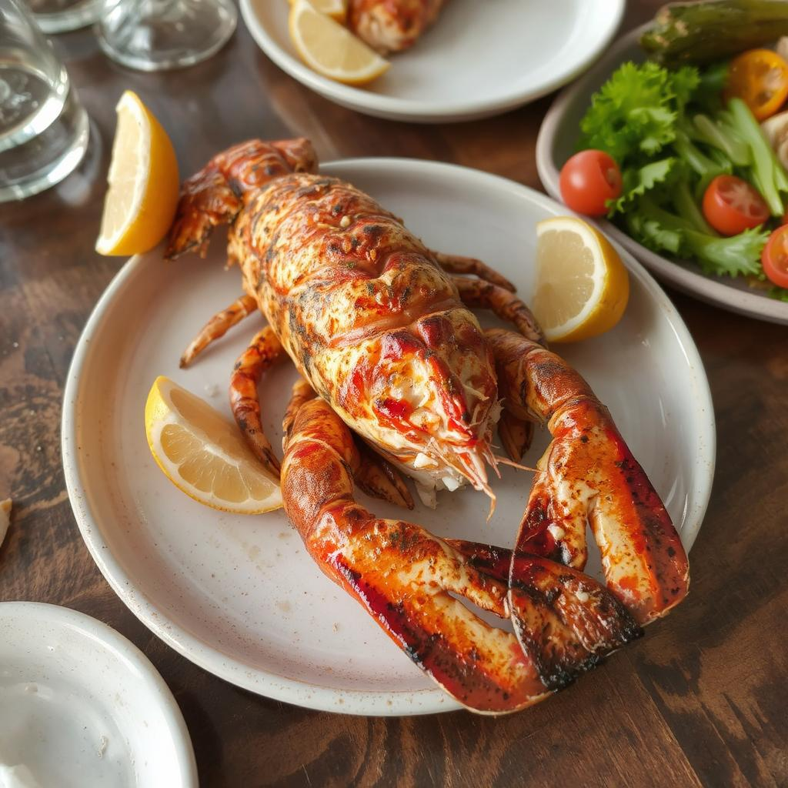
Лобстер на гриле
1200₽
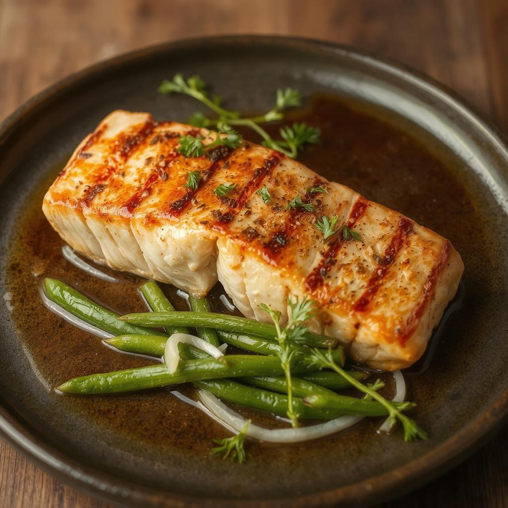
Лосось на гриле
550₽
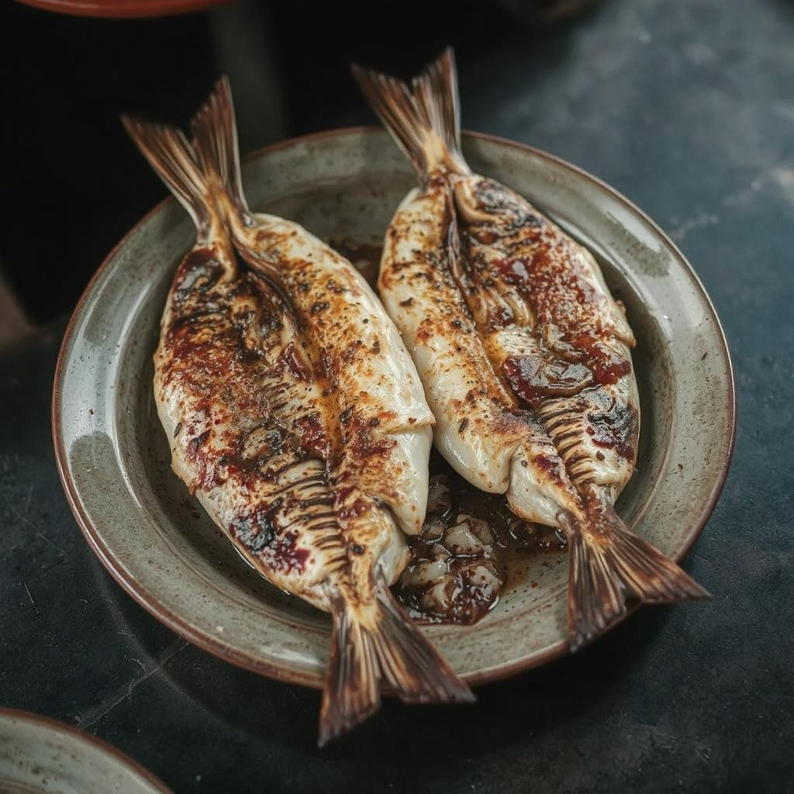
Рыба на гриле
400₽
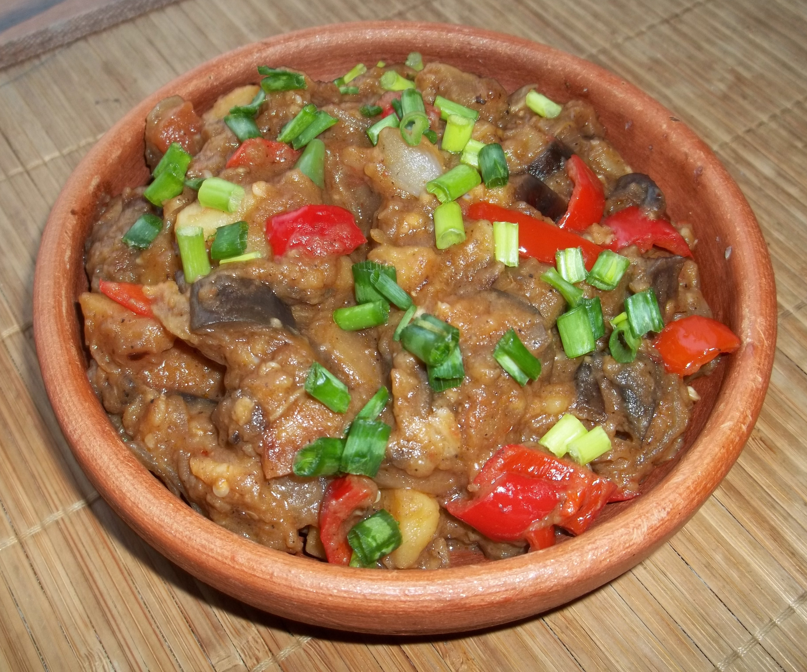
Аджапсандали
300₽
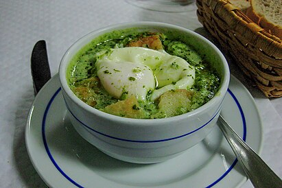
Асорда
359₽
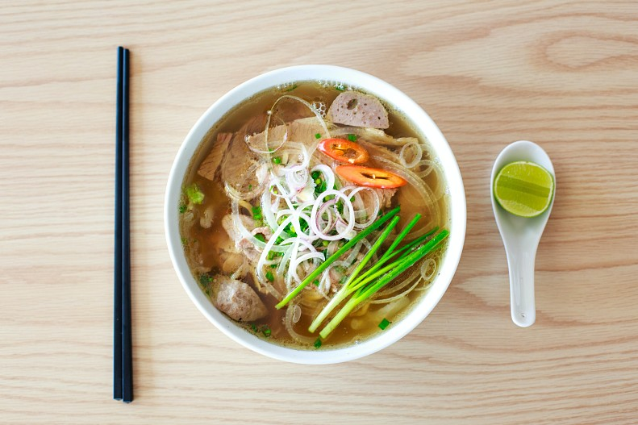
Фо
450₽
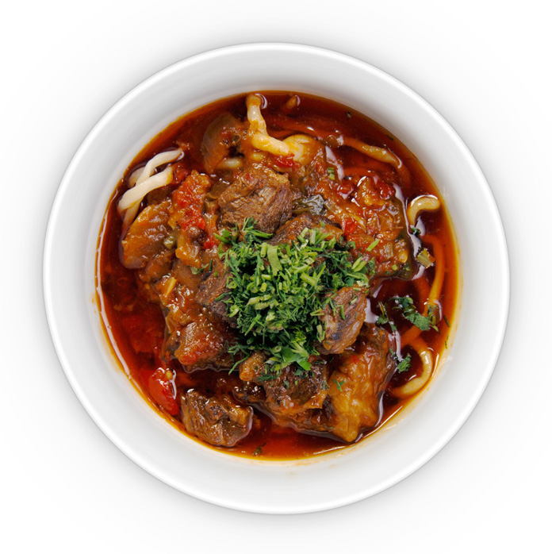
Лагман
400₽

Суп тако
350₽
Напитки
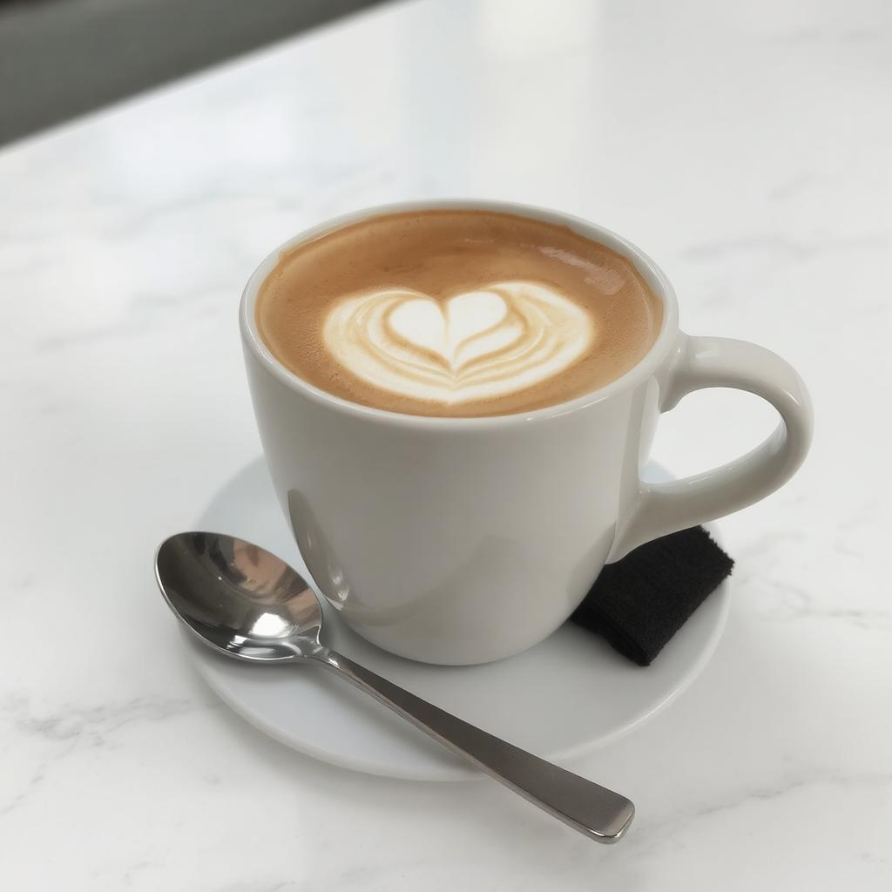
Кофе капучино
299₽
Чай зелёный
199₽
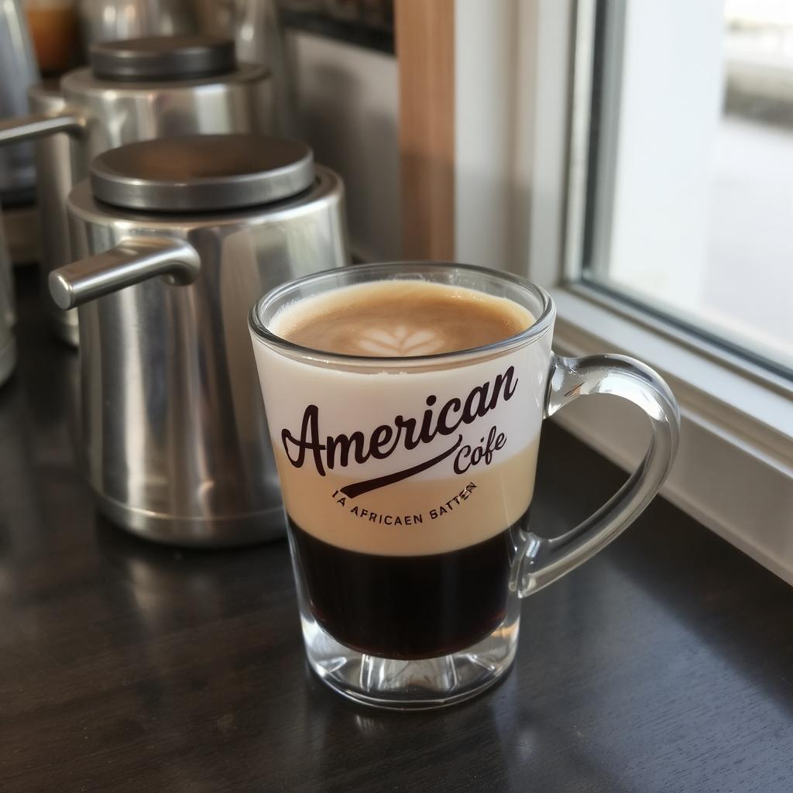
Американо
199₽
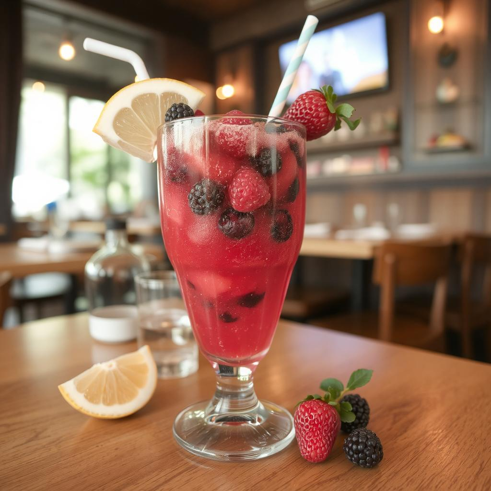
Морс ягодный
149₽

Свежий Айран
100₽
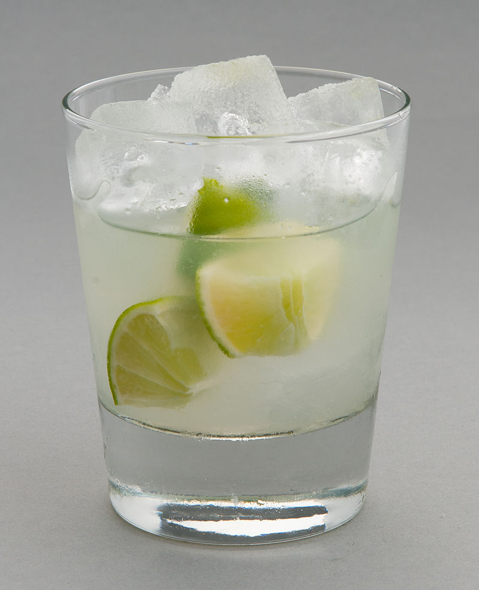
Кайпиринья в стакане
300₽
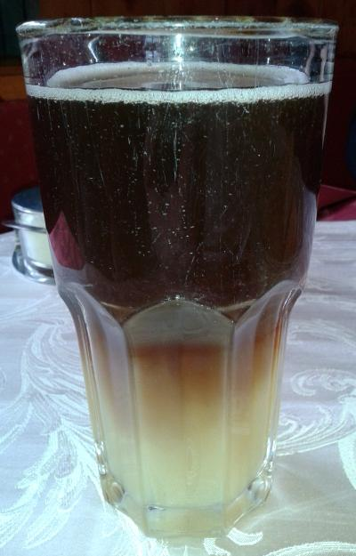
Шпеци
150₽
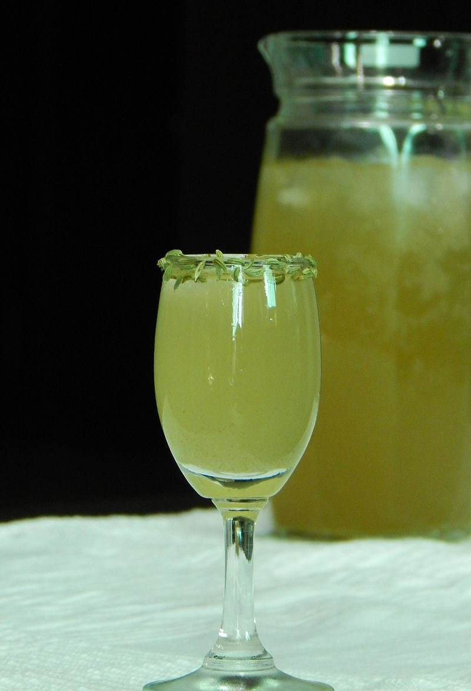
Шербет
200₽